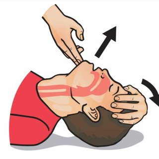
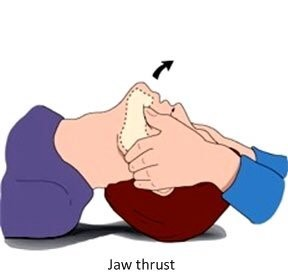

Head-Tilt, Chin-Lift
If the victim hasn't fallen and hurt their neck, tilt the persons head back and lift their chin up to allow them to breath better.

Jaw Thrust
If the victim has fallen and hurt their neck, push their jaw forward to allow them to breath better.

If you hear gurgling noises, turn them over using the following technique:
Recovery Position
Turn the victim on their side so they do not choke or inhale vomit.